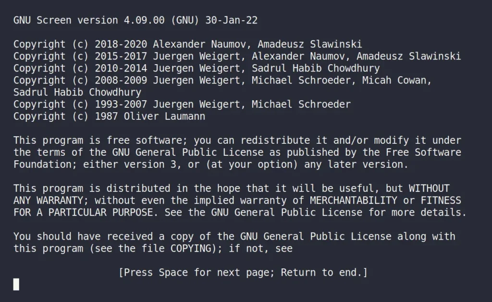
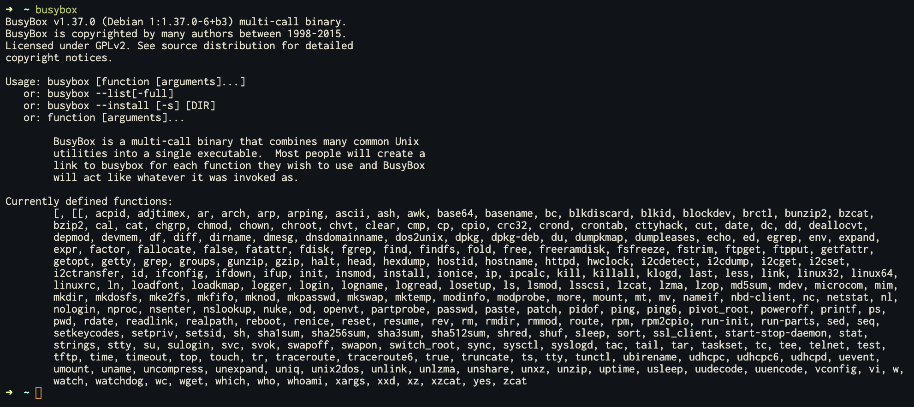
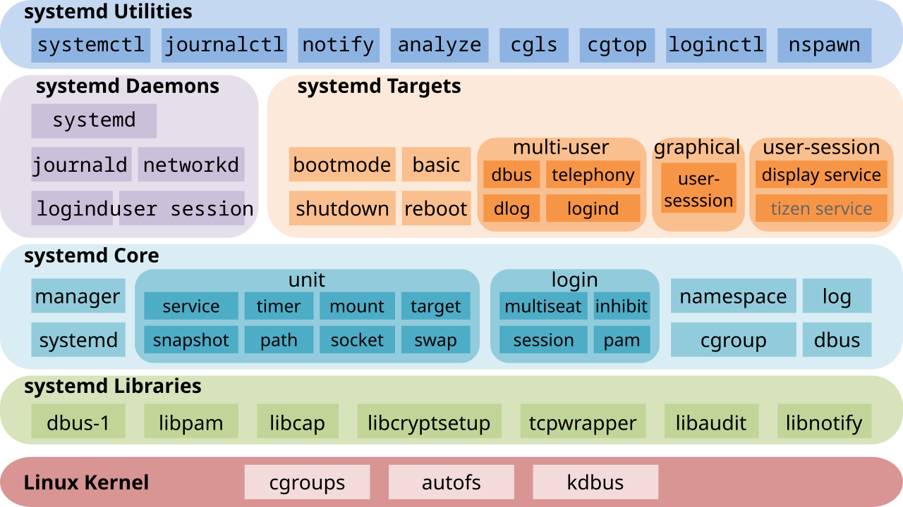

Linux 高级知识¶
进阶使用 Linux¶
终端管理¶
screen¶
1
screen 是一个终端复用器（Terminal Multiplexer），它允许你在一个终端内运行多个窗口（window），每个窗口的程序执行都是相互独立的。每当我们运行一次 screen 命令，都会启动一个 screen 会话（session）：
screen # 什么窗口都不开，显示一个欢迎界面
screen -S <sname> # 创建一个新的名字为 <sname> 的 session
接下来我们介绍 screen 的核心功能——窗口管理，首先要介绍其核心快捷键 Ctrl+A，在启动 screen 后（无论是否启动了窗口进入终端）：
| 快捷键 | 功能 |
|---|---|
Ctrl+A d |
分离当前会话，回到调用 screen 的终端 |
Ctrl+A ? |
显示帮助信息，这可以让你快速查阅所有快捷键 |
Ctrl+A c |
创建一个新的窗口 |
Ctrl+A n |
切换到下一个窗口 |
Ctrl+A p |
切换到上一个窗口 |
Ctrl+A <number> |
切换到指定编号的窗口 |
Ctrl+A w |
显示窗口列表 |
Ctrl+A k |
关闭当前窗口 |
Ctrl+A : |
进入命令模式 |
Ctrl+A " |
显示所有窗口的列表，并可以选择窗口 |
Ctrl+A \ |
退出并杀死所有窗口 |
Ctrl+A [ 或 Ctrl+A ESC |
进入复制模式（copy mode），如果需要滚动屏幕或选择文本，则必须先进入复制模式。之后可以按 ESC 或 q 退出复制模式。进入复制模式之后可以通过 vi 风格的导航或方向键导航，到对应位置后，按下 SPACE，然后选择区域，再按下 SPACE 复制选中的文本，并自动退出复制模式 |
当我们 detach 一个 screen 会话时，会显示一行（假设会话名为 test）：
[detached from 11647.test]
然后回到调用 screen 的终端，此时会话仍然在后台运行，可以通过 screen -ls 列出所有会话，然后通过 screen -r <pid>/<session name> 重新连接到该会话（根据 -ls 查到的 pid.session_name 来确定）。
screen -ls
screen -r 11647
screen -r 11647.test # pid.session_name 也可以
screen -r test # 如果会话名唯一，可以只用会话名
screen -r # 如果目前只有一个会话，可以省略 pid 或 session name
类似 vim 等软件，screen 本身也存在命令模式（command line mode），通过按下 Ctrl+A : 进入命令模式，此时界面下面会显示一个冒号，然后可以通过输入命令来管理 screen：
collapse： 重新排序窗口，并保证新的编号连续detach： 分离当前会话，回到调用 screen 的终端（此时 screen 会话仍然在后台运行）dinfo： 显示当前会话的信息help： 显示帮助信息
更多命令请参考 screen 的 manpage（man screen）。
Tip
- screen 最常用的一个场景是通过 ssh 连接远程服务器后，通过 screen 创建一个会话，然后在这个会话中运行编译或者机器学习任务，然后通过 screen 的 detach 功能将当前会话分离出来，这样退出 ssh 不会导致任务中断。
- screen 有时候也可以作为串口交互软件使用，例如通过
screen /dev/ttyUSB0 115200打开一个波特率为 115200 的串口设备。Linux 下还可以使用minicom、picocom以及图形化的gtkterm等软件来作为串口交互软件。
Note
- screen 的在线 manpage：screen(1) — Linux manual page
- screen 源码仓库：screen.git
tmux¶
tmux 与 screen 类似，但提供了更强大的功能（分屏、多客户等）和更灵活的配置。tmux 采用客户端-服务器（client-server）架构，允许多个客户端连接到同一个会话。
tmux 的核心概念包括：
- 会话（Session）：一个会话可以包含多个窗口
- 窗口（Window）：一个窗口可以包含多个窗格
- 窗格（Pane）：每个窗格是一个独立的终端

启动 tmux：
tmux # 创建一个新的会话
tmux new -s <sname> # 创建一个名字为 <sname> 的会话
tmux new-session -s <sname> # 完整命令形式
tmux 的默认前缀键是 Ctrl+B（可以通过配置文件修改，见下文）。在启动 tmux 后：
| 快捷键 | 功能 |
|---|---|
Ctrl+B d |
分离当前会话，回到调用 tmux 的终端 |
Ctrl+B ? |
显示帮助信息，列出所有快捷键 |
Ctrl+B c |
创建一个新的窗口 |
Ctrl+B n |
切换到下一个窗口 |
Ctrl+B p |
切换到上一个窗口 |
Ctrl+B <number> |
切换到指定编号的窗口 |
Ctrl+B w |
显示窗口列表，可以选择窗口 |
Ctrl+B & |
关闭当前窗口（需要确认） |
Ctrl+B : |
进入命令模式 |
Ctrl+B [ |
进入复制模式（copy mode），可以滚动和选择文本。按 q 退出复制模式 |
Ctrl+B % |
垂直分割窗格（创建左右两个窗格） |
Ctrl+B " |
水平分割窗格（创建上下两个窗格） |
Ctrl+B <方向键> |
在窗格之间切换 |
Ctrl+B x |
关闭当前窗格 |
Ctrl+B z |
最大化/恢复当前窗格（切换全屏） |
类似 screen，我们同样可以通过 tmux ls 列出所有会话，然后通过 tmux attach 或 tmux a 重新连接到会话：
tmux ls # 列出所有会话
tmux attach # 连接到列表最后一个会话
tmux attach -t <sname> # 连接到指定名称的会话
tmux a # 简写形式，连接到最后一个会话
tmux a -t <sname> # 简写形式，连接到指定名称的会话
tmux kill-session -t <sname> # 杀死指定会话
tmux 的客户端-服务器架构允许多个客户端同时连接到同一个会话：
# 终端 1：创建一个名为 "demo" 的会话
tmux new -s demo
# 在会话中运行一些命令，例如：
echo "Hello from terminal 1" > /tmp/tmux-demo.txt
cat /tmp/tmux-demo.txt
# 终端 2：从另一个终端连接到同一个会话
tmux attach -t demo
# 现在终端 2 可以看到终端 1 中运行的命令和输出
# 在终端 2 中也可以执行命令，终端 1 会同步看到
# 从任意终端 detach（例如在终端 2 中按 Ctrl+B d）
# 其他终端仍然保持连接，会话继续运行
在这个例子中，所有客户端看到相同的内容，任何一个客户端的操作都会同步到其他客户端，且即使某个客户端 detach 其他客户端仍然保持连接，会话继续运行。
tmux 也支持命令模式，通过按下 Ctrl+B : 进入，可以输入命令来管理 tmux：
new-window：创建新窗口kill-window：关闭当前窗口list-sessions：列出所有会话detach：分离当前会话split-window：分割窗格（-h水平分割，-v垂直分割）
更多命令请参考 tmux 的 manpage（man tmux）。
配置文件使用
默认情况下 tmux 没有配置文件，如果需要自定义一些快捷键或配置，则需先创建一个配置文件：
# 首先启动一个 tmux 会话，然后 detach 出去
tmux new-session -s demo
# CTRL+B d 分离会话
tmux show -g | sed 's/^/set -g /' > ~/.tmux.conf
vim ~/.tmux.conf
# 更改前缀键为 Ctrl+A
set-option -g prefix C-a
unbind-key C-b
bind-key C-a send-prefix
# 使用 Alt-arrow 切换窗格，无需前缀键
bind -n M-Left select-pane -L
bind -n M-Right select-pane -R
bind -n M-Up select-pane -U
bind -n M-Down select-pane -D
# 启用鼠标/触摸板支持，例如滚轮或触摸滚动时屏幕跟随滚动
set-option -g mouse on
# 设置窗口和窗格的索引从 1 开始
set-option -g base-index 1
setw -g pane-base-index 1
# 重新加载配置文件快捷键（Ctrl+A r）
bind r source-file ~/.tmux.conf \; display-message "Config reloaded!"
# 更多配置请参考 tmux 的 manpage（`man tmux`）。
修改配置文件后，可以在 tmux 内使用 Ctrl+B : 然后输入 source-file ~/.tmux.conf 来重新加载配置，或者使用上面配置的快捷键 Ctrl+A r。
参考资料
- tmux 的在线 manpage：tmux(1) — Linux manual page
- tmux 源码仓库：tmux/tmux: tmux source code
- Tmux Cheat Sheet & Quick Reference: https://tmuxcheatsheet.com
系统初始化¶
此处的系统初始化指的是 Linux 内核启动完成之后，进入用户态时内核执行的第一个进程，通常以 init 来表示，其 PID 为 1，是之后运行的所有进程（Shell、系统服务、用户程序等）的“祖先”。本小节将介绍 Linux 系统中作为 init 程序的若干中实现，包括 sysvinit、busybox init、systemd，除此之外还有其他实现，例如 OpenRC2、runit3 等。
问题
是否有 PID 为 0 的进程？如果有的话，这个进程是做什么的？
sysvinit¶
sysvinit（System V init）是传统的 Linux 系统初始化系统，也是 Unix System V 风格的 init 系统。它是 Linux 系统启动后第一个运行的进程（PID 1），负责启动和管理系统中的所有其他进程。
基本概念
sysvinit 使用运行级别（runlevel）来定义系统的不同状态：
| 运行级别 | 描述 |
|---|---|
| 0 | 关机 |
| 1 | 单用户模式（维护模式） |
| 2 | 多用户模式（无网络） |
| 3 | 多用户模式（有网络，文本界面） |
| 4 | 未使用（可自定义） |
| 5 | 多用户模式（有网络，图形界面） |
| 6 | 重启 |
目录结构
sysvinit 的脚本主要位于以下目录：
/etc/init.d/：存放所有服务的启动脚本/etc/rc.d/rc0.d/到/etc/rc.d/rc6.d/：对应不同运行级别的脚本链接目录/etc/inittab：init 进程的主配置文件，定义默认运行级别和启动行为
服务管理
在 sysvinit 系统中，服务脚本通常支持以下操作：
/etc/init.d/<service> start # 启动服务
/etc/init.d/<service> stop # 停止服务
/etc/init.d/<service> restart # 重启服务
/etc/init.d/<service> reload # 重新加载配置（不重启服务）
/etc/init.d/<service> status # 查看服务状态
运行级别管理
查看当前运行级别：
runlevel # 显示当前和上一个运行级别
who -r # 另一种查看方式
切换运行级别：
init <runlevel> # 切换到指定运行级别
telinit <runlevel> # 另一种切换方式
服务脚本命名规则
在运行级别目录（如 /etc/rc.d/rc3.d/）中，脚本链接的命名规则为：
S<nn><name>：启动脚本（S 表示 Start），nn是两位数字表示启动顺序K<nn><name>：停止脚本（K 表示 Kill），nn是两位数字表示停止顺序
例如：S99network 表示在网络服务启动时，按顺序 99 启动；K01network 表示在停止时，按顺序 01 停止。
手动管理服务
添加新服务：
- 在
/etc/init.d/创建服务脚本 - 使用
chkconfig或手动创建符号链接到相应的运行级别目录
使用 chkconfig 管理服务：
chkconfig --add <service> # 添加服务
chkconfig --del <service> # 删除服务
chkconfig <service> on # 在运行级别 3,4,5 启用服务
chkconfig <service> off # 在运行级别 3,4,5 禁用服务
chkconfig --list <service> # 查看服务的运行级别配置
chkconfig --list # 查看所有服务的运行级别配置
配置文件：/etc/inittab
/etc/inittab 文件定义了系统的默认运行级别和启动行为，格式通常为：
id:runlevels:action:process
例如：
id:3:initdefault: # 默认运行级别为 3
si::sysinit:/etc/rc.d/rc.sysinit # 系统初始化脚本
如果你想详细了解 inittab，请参考 https://manpages.debian.org/bookworm/sysvinit-core/inittab.5.en.html。
参考资料
- sysvinit 是传统的 init 系统，现在大多数现代 Linux 发行版已经迁移到 systemd，所以上面的大部分命令在你的系统中无法使用
- Debian 在 Jessie（Debian 8，2015年）之前采用 sysvinit，之后迁移到 systemd
- sysvinit 源码仓库：https://git.savannah.gnu.org/cgit/sysvinit.git
BusyBox¶

BusyBox 是一个集成了许多 Unix 工具的单一可执行文件，它将许多常用的 Unix 工具（如 ls、cat、grep、mount、sh4 等，称为 "applets"）打包成一个小的可执行文件。BusyBox 常用于嵌入式系统如基于 buildroot 等构建的 Linux 发行版、Alpine Linux 等。
基本概念
BusyBox 通过符号链接（symlink）机制工作：BusyBox 可执行文件本身包含所有工具的实现，通过不同的名称（符号链接）调用时，会执行相应的功能。
提示
- 假设你尝试自己制作一个基于 BusyBox 的 Linux 发行版文件系统，你编译好 BusyBox 后将其放在了正在构建的文件系统中的
/bin/busybox，然后你可以cd进入对应的 bin 目录（例如~/my_rootfs/bin）然后创建一个符号链接：ln -s busybox ls，切记不要使用ln -s /bin/busybox /bin/ls这样的形式，因为我们假设你在构建文件系统时还没有 chroot，所以/bin目录指向的是你的 host linux 环境中的/bin目录。请思考一下 BusyBox 是如何做到“通过符号链接就能调用单个可执行文件中的所有工具”的？ - 请阅读 BusyBox 的源码，验证你的想法：
- GitHub 仓库：https://github.com/mirror/busybox，观察源码结构，找到“真正的”
main函数的实现（你可能会发现若干xxx_main函数，它们是 BusyBox 的各 applet 的 “main 函数”） - Spoiler Alert：点击跳转到谜底（真 main）
- Spoiler Alert：点击跳转到谜底（运行 applets）
- GitHub 仓库：https://github.com/mirror/busybox，观察源码结构，找到“真正的”
- 前文的
ln命令是在你的 host linux 环境中执行的，此时构建的文件系统内容还不完整
基本使用
查看 BusyBox 支持的所有命令：
busybox --list # 列出所有支持的命令
busybox --list-full # 列出所有支持的命令（完整路径形式）
使用 BusyBox 命令：
# 方式 1：直接调用 busybox，后跟命令名
busybox ls
busybox cat /etc/passwd
busybox grep "root" /etc/passwd
# 方式 2：通过符号链接调用（如果已创建符号链接）
# 例如：/bin/ls -> /bin/busybox
ls # 实际调用 busybox ls
cat /etc/passwd # 实际调用 busybox cat
安装和配置
在系统中安装 BusyBox 后，通常需要创建符号链接：
# 创建符号链接到 /bin 目录
busybox --install -s /bin
# 或者手动创建符号链接
ln -s /bin/busybox /bin/ls
ln -s /bin/busybox /bin/cat
ln -s /bin/busybox /bin/grep
作为 init 系统
BusyBox 也包含一个简化版的 init 系统（BusyBox init），常用于嵌入式 Linux 系统。BusyBox init 使用 /etc/inittab 配置文件：
# /etc/inittab 示例
::sysinit:/etc/init.d/rcS
::respawn:/sbin/getty 115200 ttyS0
::ctrlaltdel:/sbin/reboot
::shutdown:/bin/umount -a -r
BusyBox init 支持以下操作：
# 查看 init 进程信息
ps aux | grep init
# 重启系统（如果使用 BusyBox init）
reboot
# 关机（如果使用 BusyBox init）
halt
poweroff
参考资料
- BusyBox 官方网站：https://busybox.net
- BusyBox 源码仓库：https://git.busybox.net/busybox
- 大多数现代 Linux 发行版使用完整的 GNU coreutils（https://www.gnu.org/software/coreutils/）
- 在嵌入式系统和容器环境中，BusyBox 仍然非常流行
systemd¶
5
systemd 是现代 Linux 系统的 init 系统，是目前绝大多数 Linux 发行版的默认 init 系统6。systemd 由 RedHet 公司开发，以”违反 UNIX 哲学——一个软件只做一件事情“著称，其不仅是一个 init 系统，还是一系列完善的管理系统服务的工具和库的集合，一些常用组件包括：
systemd：系统服务管理器systemctl：systemd的命令行管理工具systemd-analyze：systemd的分析工具，包括系统启动分析等systemd-journald：系统日志管理libudev：udev 标准库localed：管理系统的本地化（locale）systemd-logind：管理用户登陆hostnamed：管理主机名networkd：网卡管理resolved：域名解析管理systemd-boot：启动管理，可以替换 GRUB
参考资料
- systemd 官方网站：https://systemd.io
- systemd 源码仓库：https://github.com/systemd/systemd
系统监控（Monitoring）¶
ps¶
top¶
htop¶
系统追踪（Tracing）¶
strace¶
perf¶
ftrace¶
bpftrace¶
LTTng¶
Linux 内核初探¶
内核开发流程¶
内核源码树结构与内核编译¶
KBUILD 系统¶
内核子系统简介¶
进程管理¶
内存管理¶
文件系统¶
网络系统¶
驱动框架¶
安全机制¶
Rust For Linux¶
Note
- Rust-for-Linux 官方网站： https://rust-for-linux.com
- Rust-for-Linux 内核文档： https://docs.kernel.org/rust/index.html
eBPF¶
1993 年 McCanne 和 Van Jacobson 在 USENIX 论文7中提出 BSD Packet Filter，使用一套轻量可验证的虚拟机来高效过滤网络包。经典 BPF（cBPF）随后在 Linux 2.6 内核中被引入，用作 tcpdump 与 libpcap 的底层过滤引擎。2014 年，Linux 内核 3.18 替换了旧的 BPF 解释器，引入扩展 BPF（extended BPF，eBPF）虚拟机：增加 64 位寄存器、改进指令集、支持函数调用、提供独立栈空间并具备严格的安全验证。
Note
- eBPF 官方网站： https://ebpf.io
- eBPF 内核文档： https://docs.kernel.org/bpf/index.html
Note
如果你想知道更多关于 Linux 内核的知识，可以参考 Linux内核官方文档。
-
How to Install and Use Screen on Linux (15 Practical Examples) https://linuxtldr.com/installing-screen/ ↩
-
OpenRC 文档：https://wiki.gentoo.org/wiki/OpenRC ↩
-
runit 源码：https://github.com/void-linux/runit ↩
-
BusyBox 自带了
sh解释器的实现ash或hush，https://elixir.bootlin.com/busybox/1.37.0/source/shell ↩ -
systemd 组件图，图片来源：https://en.wikipedia.org/wiki/Systemd ↩
-
systemd 的各种 Linux 发行版采用情况：https://en.wikipedia.org/wiki/Systemd#Adoption ↩
-
McCanne, Steven and Van Jacobson. “The BSD Packet Filter: A New Architecture for User-level Packet Capture.” USENIX Winter (1993) ↩
-
Everything you need to know about tmux – Panes https://arcolinux.com/everthing-you-need-to-know-about-tmux-panes ↩